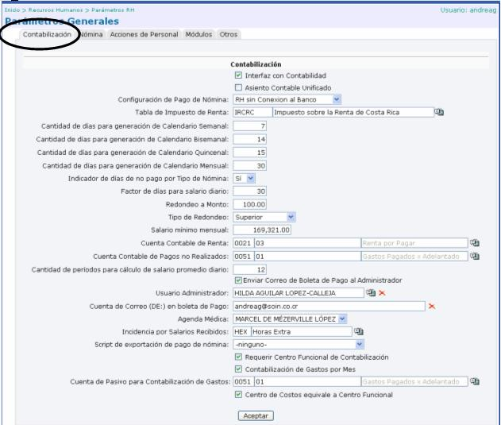
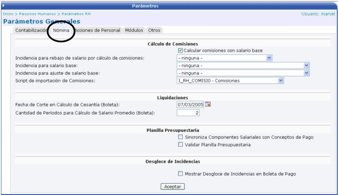
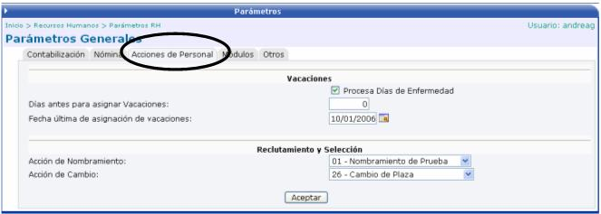
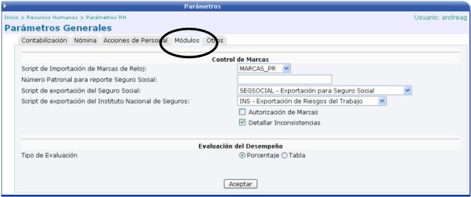
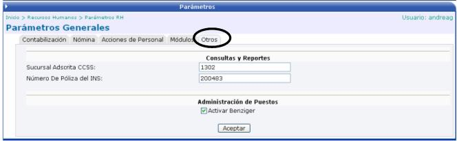

La siguiente pantalla muestra los parámetros que se deben de definir para utilizar el sistema de Recursos Humanos:

A continuación se detalla cada uno de los campos de la sección de Contabilización:
Interfaz con Contabilidad: permite realizar automáticamente los asientos contables de los movimientos generados en el cálculo de la nómina, en el sistema de contabilidad.
Asiento Contable Unificado: Si se activa este check, cuando se contabilice una nómina, los movimientos que se generen se van a crear en un solo asiento contable.
Configuración de Pago de Nómina: le indica al sistema si este tiene o no tiene conexión con el banco a la hora de hacer las trasferencias por el pago de la planilla. Si la empresa paga las planillas en diferentes bancos la opción a escoger seria “RH sin Conexión al Banco”, debido a que el sistema no puede tener conexión con “n” cantidad de bancos a la vez.
Tabla de Impuesto sobre la Renta: es la tabla que se utilizará para calcular el impuesto sobre la renta.
Cantidad de días para generación de Calendario Semanal: aquí se digita el número de días a pagar que corresponden al pago semanal.
Cantidad de días para generación de Calendario Bisemanal: aquí se digita el número de días a pagar que corresponden al pago bisemanal.
Cantidad de días para generación de Calendario Quincenal: aquí se digita el número de días a pagar que corresponden al pago quincenal.
Cantidad de días para generación de Calendario Mensual: aquí se digita el número de días a pagar que corresponden al pago mensual.
Indicador de días de no pago por tipo de nómina: se debe de seleccionar si se quiere especificar los días que no se toman en cuenta para el pago, según el tipo de nómina. Si se escoge la opción Sí, el sistema le desplegará la lista de días, en la opción Tipos de Nómina, para que el usuario seleccione los que no se van a tomar en cuenta.
Factor de días para el salario diario: indicar la cantidad de días para calcular el salario diario.
Redondeo a Monto: especificar el redondeo que se va a aplicar en el sistema, para el cálculo de nómina.
Tipo de Redondeo: seleccionar entre Superior o Al más Cercano. Dependiendo del que se escoja así se hará el redondeo.
Salario Mínimo Mensual: este salario corresponde al salario mínimo que debe de percibir un empleado, para que se le aplique un embargo. Si el empleado recibe un pago menor al que se especifica en este campo, no se le puede efectuar el monto del embargo.
Cuenta Contable de Renta: seleccionar la cuenta donde se van a realizar los movimientos del cálculo de renta.
Cuenta Contable de Pagos no Realizados: seleccionar la cuenta donde se van a realizar los movimientos de los pagos no realizados.
Cantidad de períodos para el cálculo de salario promedio diario: cantidad de periodos que se van a tomar en cuenta para el cálculo del retroactivo. Van a depender del tipo de nómina.
Enviar Correo de Boleta de Pago al Administrador: le envía un correo al administrador del sistema, con la información de todas las boletas de pago. Los empleados de la empresa no reciben el correo con la boleta de pago, sino que todas las boletas le llegan al correo del usuario administrador, para que luego ser impresas y repartidas.
Usuario Administrador: seleccionar la persona que será el usuario administrador del sistema.
Cuenta de Correo (DE:) en boleta de pago: digitar la dirección de correo electrónico del emisor del correo, que enviara a los empleados la información de la boleta de pago.
Agenda Médica: en el caso de que la compañía cuente con un doctor de empresa, aquí se debe de especificar su nombre.
Incidencia por Salarios Recibidos: seleccionar la incidencia a pagar por salarios recibidos.
Script de exportación de pago de nómina: seleccionar el Script que se ejecutará en la exportación de datos del pago de nómina.
Requerir Centro Funcional de Contabilización: si esta activo este check, se pedirá como requerido el centro funcional de contabilización en la creación de plazas en los centros funcionales.
Contabilización de Gastos por Mes: si esta activo este check, se realizará la contabilización de gastos por mes.
Cuenta de Pasivo para Contabilización de Gastos: seleccionar la cuenta donde se van a realizar los movimientos de los gastos.
Centro de Costos equivalente a Centro Funcional: si esta activo el check quiere decir que el centro de costos es el mismo que el centro funcional.
A continuación se detalla cada uno de los campos de la sección de Nómina:

CÁLCULO DE COMISIONES
Calcular comisiones con salario base: permite que el cálculo de las comisiones se haga sobre el salario base. Si este check esta activado, cuando se haga la relación de cálculo de nómina, parecerá un botón de COMISIONES, donde se podrán importar las comisiones para los empleados.
Incidencia para rebajo de salario por cálculo de comisiones: se desplegará una lista de conceptos de pago, donde el usuario deberá de seleccionar la incidencia que afecte el rebajo de salario por el cálculo de comisiones.
Incidencia para el Salario Base: Se desplegará una lista de conceptos de pago, donde el usuario deberá de seleccionar la incidencia que afecte el salario base.
Incidencia para ajuste de salario base: Se desplegará una lista de conceptos de pago, donde el usuario deberá de seleccionar la incidencia que afecte el ajuste del salario base.
Script para importación de Comisiones: seleccionar el Script de importación para las comisiones
LIQUIDACIONES
Fecha de Corte en Cálculo de Cesantía (Boleta): fecha que se tomará como corte para realizar el cálculo del monto de la cesantía de un empleado.
Cantidad de Periodos para Cálculo de Salario Promedio (Boleta): número de periodos a tomar en cuenta para realizar el cálculo del monto del salario promedio.
PLANILLA PRESUPUESTARIA
Sincroniza Componentes Salariales con Conceptos de Pago: si esta activo este check, se sincronizarán los componentes salariales con los conceptos de pago.
Validar Planilla Presupuestaria: si esta activo este check, se validarán todos los cálculos que se realicen bajo el concepto de planilla presupuestaria
DESGLOCE DE INCIDENCIAS
Mostrar Desglose de Incidencias en Boleta de Pago: permite desplegar o no, el detalle de las “Unidades” y “Valor” en las Incidencias. Aplica en los procesos de envío de boleta de pago desde la nómina, desde el histórico y en el módulo de autogestión.
A continuación se detalla cada uno de los campos de la sección de Acciones de Personal:

VACACIONES
Procesa días de enfermedad: permite saber si la empresa cuenta con cierto número de días disponibles para que un empleado falte a sus labores por motivo de enfermedad, sin que se los rebajen del salario.
Días antes para asignar vacaciones: número de días que deben de transcurrir antes de que el empleado pueda disfrutar de vacaciones.
Fecha última de asignación de vacaciones: última fecha en la que la empresa asigno vacaciones a un empleado.
RECLUTAMIENTO Y SELECCIÓN
Acción de Nombramiento: seleccionar de la lista que se despliega, la acción de nombramiento que se realizará en el caso de nombrar a una persona.
Acción de Cambio: seleccionar de la lista que se despliega, la acción de cambio que se realizará en el caso de cambiar a una persona de puesto.
A continuación se detalla cada uno de los campos de la sección de Módulos:

CONTROL DE MARCAS
Script de Importación de Marcas del Reloj: archivo que tiene la información de las marcas generadas por el reloj, que controla las entradas y salidas del empleado.
Número patronal para reporte Seguro Social: digitar el número patronal de la empresa, para la generación del reporte a entregar al Seguro Social.
Script de Exportación del Seguro Social: seleccionar el archivo de exportación, con el formato definido por empresa, para el Seguro Social.
Script de Exportación del Instituto Nacional de Seguros: seleccionar el archivo de exportación, con el formato definido por la empresa, para el I.N.S.
Autorización de Marcas: si este check se encuentra activo, en el módulo de Control de Marcas, se permitirá el ingreso a la opción de Autorización de Pago de Horas.
Detallar Inconsistencias: si este check se encuentra activo se podrá
EVALUACIÓN DEL DESEMPEÑO
Tipo de Evaluación: seleccionar entre Porcentaje o Tabla para la generación de evaluaciones que se vayan hacer a los funcionarios de la empresa. Si es por porcentaje el valor del concepto de evaluación es fijo, mientras que si se utiliza una tabla el valor del concepto puede ser variable.
A continuación se detalla cada uno de los campos de la sección de Otros:

CONSULTAS Y REPORTES
Sucursal Adscrita de la CCSS: número de la sucursal adscrita de la Caja Costarricense del Seguro Social.
Número de Póliza del INS: digitar el número de póliza que tiene la empresa con el INS.
ADMINISTRACIÓN DE PUESTOS
Activar Benziger: si este check esta activo se podrá observar el Perfil Benziger de un puesto, desde el módulo de Administración de Puestos, al seleccionar un puesto.